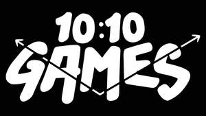

Trade Mark Journal No.2025/051 19 December 2025
UK00004306875 8 December 2025 (9,41,42)
Mark 1

Mark 2
- Class 9
- Computer games; Interactive entertainment computer software for video games; Downloadable interactive entertainment software for playing video games; Computer games entertainment software; Computer programmes for playing games; Downloadable interactive entertainment software for playing computer games; Video games software; Downloadable computer games; Games software for use with computers; Interactive multimedia software for playing games; Computer programs for playing games; Games software; Gaming software; Computer application software featuring games and gaming; Computer game software for use with on-line interactive games; Computer software for the administration of on-line games and gaming; Computer programs for video and computer games; Computer games software; Software programs for video games; Video games programs [computer software]; Computer programmes for interactive television and for interactive games and/or quizzes; Interactive multimedia computer games programmes; Computer games programs; Computer gaming software; Video game computer programs; Video and computer game programs; Computer games programmes [software]; Computer video game software.
- Class 41
- Internet games (non-downloadable); Entertainment services in the nature of video games; On-line computer games; Computer and video game amusement services; Providing online video games; Provision of online computer games; Publishing of interactive computer and video game software; Video game entertainment services.
- Class 42
- Computer programming of video games; Development of video and computer games; Computer programming of video and computer games; Computer programming of computer games; Programming of video game software.
10:10 Games limited